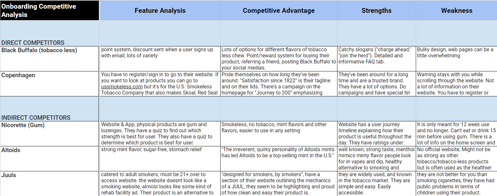
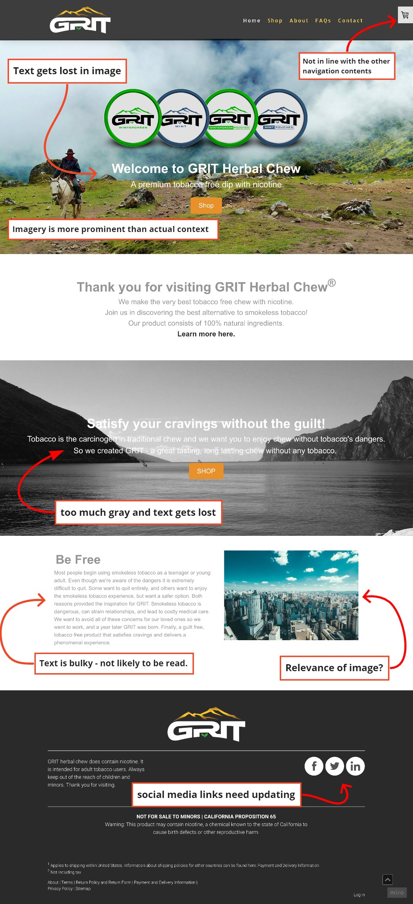
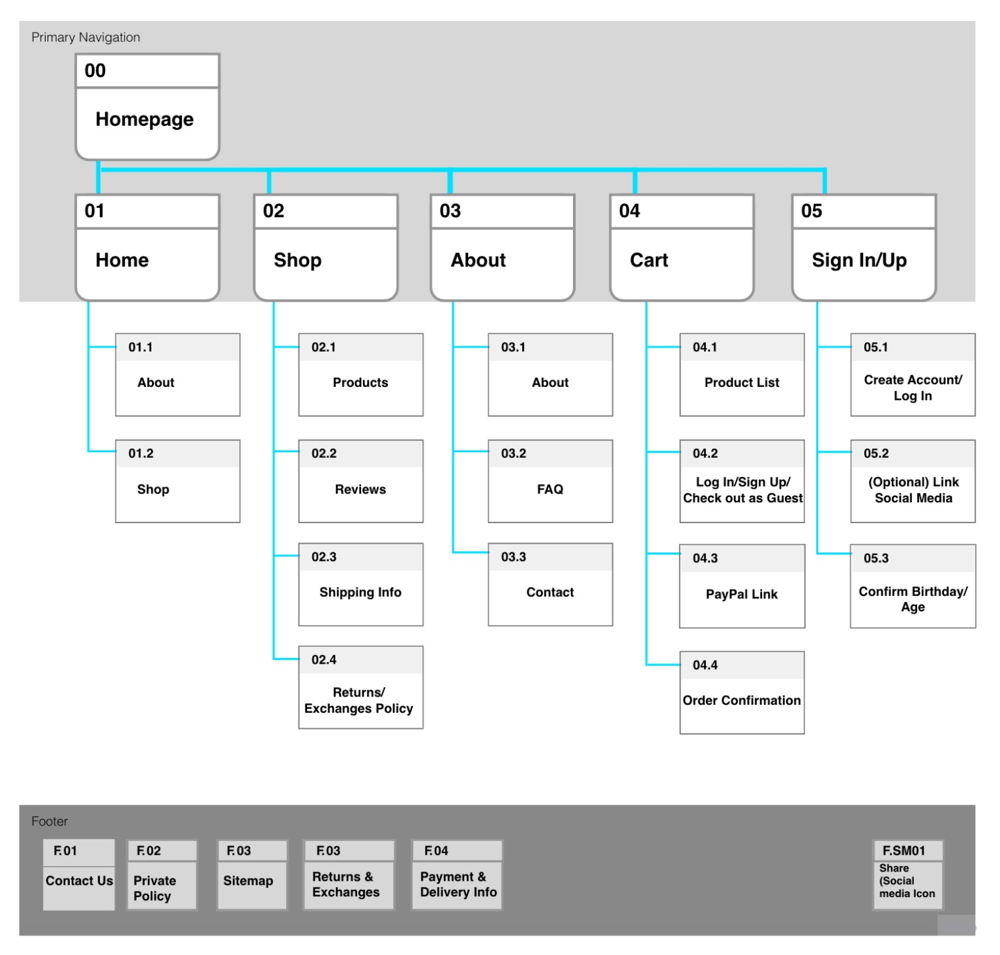
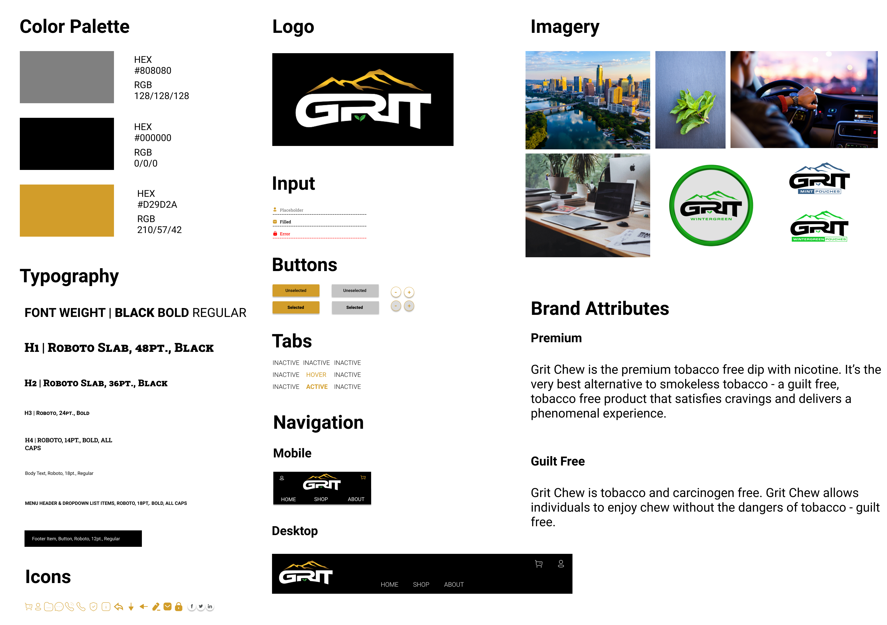
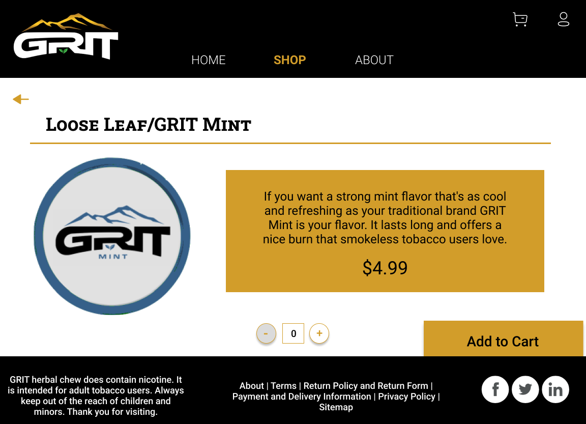
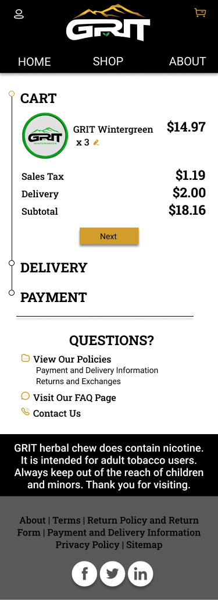

Website Redesign
GRIT is a tobacco less chew with nicotine in it made from mint leaves.
The Grit Chew was designed to attract tech-savvy businessmen who are looking for a high quality tobacco free alternative. The website is not reflecting the desired user which is causing a decrease in website traffic and less business. How might we improve the Grit Chew website so that it appeals to their target customers and our stakeholders feel successful in communicating their brand identity?
1) Refine brand identity
2) Highlight competitive advantage
3) Make mobile website more accessible and functional
UX/UI Designer (Group Project)
Miro, Figma, unDraw, Adobe Photoshop, Adobe XD, Google Forms, Google Slides, Google Sheets
We were given user interviews from our stakeholder. We reviewed 8 of them and conducted one of our own as well as interviewing our stakeholder.
Key takeaways from our stakeholder interview:
- target audience: educated, white collar, tech savvy, urban area, aged 21-40
- competitive advantage is their target audience
- prides itself on the feel, flavor, how long it lasts and nicotine content
- majority of the website traffic comes from mobile
After our stakeholder interview we had a clearer understanding of who this product is for and the vision of the brand but we still needed to know more about our user.
We also conducted a survey of our own to answer some questions about what the user was looking for in a tobacco alternative. Since we did not know much about the product or the industry we had to do a lot of research on the product itself. From this information I created an affinity diagram and we created an empathy map.
Key takeaways:
- flavor, taste and feel are very important
- most have tried or want to quit
- nicotine is important even in an alternative
After having a good grasp on our user we needed to explore the products and industry more. We conducted a competitor analysis with tobacco chew, tobacco less chew and other tobacco alternatives.
Key takeaways:
- there are already quite a few tobacco less chew companies
- well done branding and slogans
- used game design techniques
- visually appealing websites in relation to each product
- tobacco companies have been in business for a long time
How could we make GRIT stand apart? What made them special and how could we build a website to represent that? We did a SWOT analysis to see how GRIT was stacking up to the competition.
Key takeaways:
- GRIT had a unique target audience separate from the other brands
- highlight the quality of GRIT products
- create a website to attract our unique users
After we had a good understanding of our user, the product and our competition, we took a look at the current website. Our stakeholder didn’t provide much instruction on how he wanted it to look or colors so we were able to have some creative freedom.
Key takeaways:
- bulky text
- text gets lost in images
- relevance of images
- gray text on FAQs hard to read
- no product pages
- website did not seem to match the target audience
After our heuristic evaluation we started on our site map. We made some key changes in the top navigation by consolidating our FAQs, About and Contact pages all into one page since there was not a large amount of text. We added product pages to give more room for images and information about the product. We also added a sign up/in page because our stakeholder informed us of their plans to start a rewards program for users.
Once our site map and wireframes had been completed we were ready to start on a lo-fi prototype. I worked mainly on the desktop version while prototyping with one other teammate. When we started prototyping we wanted to remember that we were going for a sleek design that would attract a tech savvy user.
After our lofi prototype we needed to create a style guide before moving on. Deciding on colors we wanted to pull from the logo but also keep it lighter than some of the competitor’s websites to stand apart. We ended up with rectangular buttons and cards to give the site a more masculine look. Below is our final guide with iterations made through out as we updated our prototype.
With our style guide done we created a midfi prototype. We decided to utilize the gold from the logo, keep the background white to give it a lighter feel and make the navigation bars black to give it a masculine feel. We added animations to make it feel interactive and that they could see themselves using the product. We did accesability testing and made iterations on text and background colors.
Here are some pages from the final prototype on mobile:
The biggest obstacle on this project was time. With only 3 weeks to redesign the test we had to hit the ground running. We had the advantage of user interviews already being conducted but no one on the team had ever used any kind of chew.
More research could have been done and much more testing.
For future iterations on the site our stakeholder wants to start a rewards program so we gave him a sign in/up page that could be expanded as well as product pages for more information and pictures for the product pages.